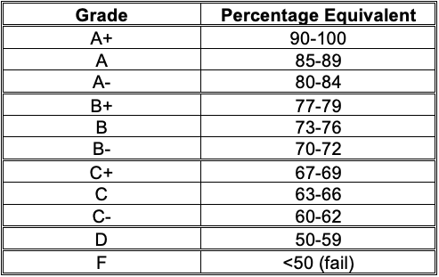

Course Syllabus
Contents

Course Syllabus#
CIS 385 AB1
Project Management (3)
2022 Fall
Fridays, 11:30-14:20 PST
Mode of Delivery/Location:
In-person / Building D 226 (Abbotsford)
Course Instructor#
Name: Parsa Rajabi (he/his/him)
Email: parsa.rajabi [at] ufv.ca (replace [at] with @)
Note: When emailing, please put CIS 385” at the start of your subject line.
Slack: @parsa
Office Hours: TBD
Course Description#
CIS 385 (3) Project Management
The UFV calendar description of this course is:
This course is designed to complement existing information technology knowledge, skills, and experience with the project management skills required to effectively manage development projects that involve computer hardware, computer software, and telecommunications technology.
Prerequisite(s): One of the following: CIS 270, CIS 291, or admission to the Data Analysis Post-degree certificate program.
Important Dates#
You will find all the important term dates in the UFV Academic Calendar.
Learning Outcomes#
The Learning Outcomes for this course are:
Assess the growing need for IT project management.
Describe the role of the project manager.
Describe the systems view of project management and how it applies to IT projects.
Discuss the unique attributes and diverse nature of IT projects.
Describe the recent trends affecting IT project management, including globalization, outsourc- ing, and virtual teams.
Apply different project selection methods using the strategic planning process.
Apply the concepts of good project scope, time, cost, quality, and risk management.
Discuss the process for creating a work breakdown structure.
Identify the tools and techniques for quality control.
Explain the importance of good human resource management.
Use effective communication skills on projects.
Explain the importance of managing stakeholder expectations.
Identify the elements involved in risk management planning and the contents of a risk manage- ment plan.
Assess the importance of project procurement management and the implications of the increas- ing use of outsourcing for IT projects.
Use Microsoft Project to help manage IT projects.
More details about the course can be found on CIS 385 - UFV Academic Calendar
Required Materials#
Textbook A - Link#
Information Technology Project Management – 9th Edition by Kathy Schwalbe
ISBN: 9781337101356
Textbook B - Link#
Project Management – 2nd Edition by Adrienne Watt and Watt, Adrienne
Course Evaluation#
The grading scheme for this course is:
Item |
Weight |
Due date(s) |
Frequency |
|---|---|---|---|
MIT PM Simulation |
10% |
On-going |
|
Weekly Activities |
10% |
Before Class on Saturdays |
Weekly |
Quizzes |
20% |
As per schedule |
On-going |
Assignments |
30% |
As per schedule |
On-going |
Final Componenet |
30% |
TBD |
Once |

Late Policy and Missed Assignments/Exams#
All assignments, quizzes, weekly activities and exams must be submitted/completed on their designated due dates. Failure to not meet deadlines will result in a mark of zero, except under extraordinary circumstances on a case-by-case basis as approved by the instructor (with valid documentation).
Tentative Course Schedule#
This is the tentative plan for CIS 385 this term. The schedule is subject to change based on the course progress.
Wk# |
Date |
Topic |
|---|---|---|
1 |
Sept 9 |
Syllabus + Introduction |
2 |
Sept 16 |
Project Life Cycle + Framework for Project Management |
3 |
Sept 23 |
Stakeholder Management + Culture & Project Management |
4 |
Sept 30 |
Cancelled |
5 |
Oct 7 |
Project Initiation |
6 |
Oct 14 |
Overview of Project Planning + Scope Planning |
7 |
Oct 21 |
Project Schedule |
8 |
Oct 28 |
Resource Planning + Budget |
9 |
Nov 4 |
Quality Planning + Procurement Management |
10 |
Nov 11 |
Cancelled |
11 |
Nov 18 |
Risk Management Planning |
12 |
Nov 25 |
Project Implementation Overview |
13 |
Dec 2 |
Project Completion |